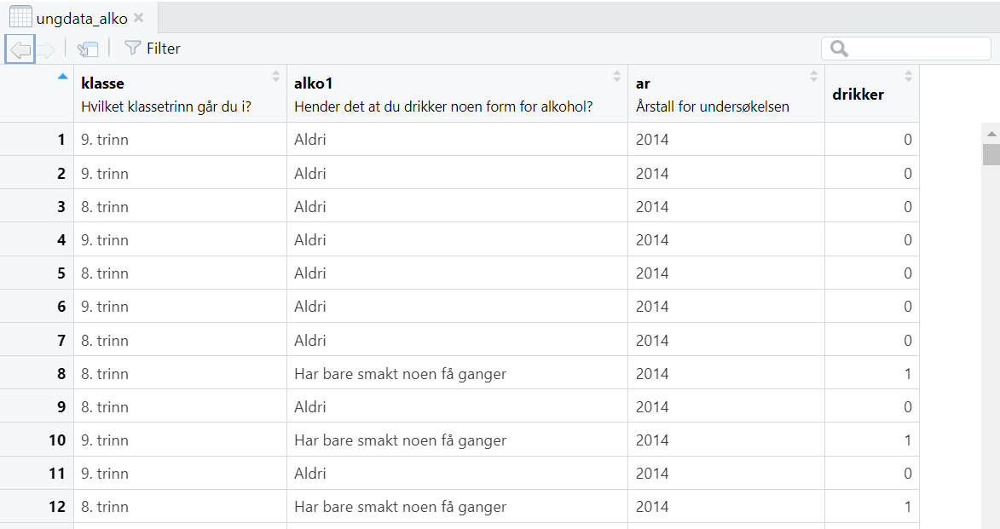

library(tidyverse)
library(memisc)1 Lese inn datasett
I dette kapittelet skal vi bruke følgende pakker:
1.1 Generelt om ulike dataformat
Data kan være lagret i mange ulike formater, og du vil kunne få data i et format som ikke er tilrettelagt verken i eller for R. Å gjøre om data fra et format til et annet kan være en avgjørende oppgave for å få gjort noe som helst. R kan imidlertid håndtere det aller meste av dataformater på en eller annen måte. Foreløpig skal vi kun se på et dataformat som er spesielt egnet for R, nemlig rds-formatet. Alle datasett som følger med denne boken vil være i rds-formatet, med unntak av kapittelet der temaet er import av andre formater.
1.2 Lese inn datasett og få oversikt
Vi bruker her et lite utvalg variable fra Ungdata 2010-2020 (NOVA and Bakken (2023)) som er lagret i rds-format. Dette datasettet er tilgjengelig på NSD sine sider. Følgende kode bruker funksjonen readRDS for å lese inn datasettet. Filbanen er angitt å ligge i en mappe som heter “data” i prosjektmappen, og filnavnet er “ungdata_alko.rds”. Når man leser inn dataene legges de i et “objekt” som vi her kaller ungdata_alko.
ungdata_alko <- readRDS("data/ungdata_alko.rds")En første ting man bør sjekke er om dataene er lest inn riktig og at det rett og slett ser greit ut. Det er lite som kan gå galt når man leser inn en rds-fil, men det kan være en fordel for deg selv å se på dataene og se hvordan de ser ut. Vi kan se på objektet ungdata_alko ved å skrive navnet på objektet i konsollen. Da vil R i utgangspunktet skrive hele datasettet i konsollen.
ungdata_alko# A tibble: 845,100 × 5
klasse ar kjonn alko1 drikker
<fct> <fct> <fct> <fct> <dbl>
1 9. trinn 2014 Gutter Aldri 0
2 9. trinn 2014 Gutter Aldri 0
3 8. trinn 2014 Gutter Aldri 0
4 9. trinn 2014 Gutter Aldri 0
5 8. trinn 2014 Gutter Aldri 0
6 9. trinn 2014 Jenter Aldri 0
7 8. trinn 2014 Gutter Aldri 0
8 8. trinn 2014 Gutter Har bare smakt noen få ganger 1
9 8. trinn 2014 Jenter Aldri 0
10 9. trinn 2014 Jenter Har bare smakt noen få ganger 1
# ℹ 845,090 more rowsDet er imidlertid sjelden hensiktsmessig å se på hele datasettet på denne måten. Det er for det første ikke plass til å vise hele datasettet i konsollen, og for det andre er det ikke så lett å få oversikt over datasettet på denne måten. Hvis du virkelig vil se på hele datasettet er det bedre å bruke View-funksjonen som åpner datasettet i et eget vindu.
View(ungdata_alko)
Du kan lukke dette vinduet med dataene uten at det har noe å si for dataene, som fremdeles er tilgjengelig i objektet på samme måte som før.
Det er vanligvis ikke så nyttig å se på datasettet på denne måten heller. Det er derfor vanligvis mer hensiktsmessig å se på en del av datasettet med å bare be om å få se de første observasjonene. Da får du et innblikk i datastrukturen, variable og verdier. Dette gjøres med funksjonen head.
head(ungdata_alko)# A tibble: 6 × 5
klasse ar kjonn alko1 drikker
<fct> <fct> <fct> <fct> <dbl>
1 9. trinn 2014 Gutter Aldri 0
2 9. trinn 2014 Gutter Aldri 0
3 8. trinn 2014 Gutter Aldri 0
4 9. trinn 2014 Gutter Aldri 0
5 8. trinn 2014 Gutter Aldri 0
6 9. trinn 2014 Jenter Aldri 0Hvis det er mange variable i datasettet vil det ikke bli plass i consoll-vinduet til å vise alle variablene. Da vil R bare vise de første variablene og skrive at det er flere variable som ikke vises. Da kan det være mer hensiktsmessig å bruke funksjonen glimpse som viser variabelnavnene i rader, med de tilhørende første verdiene.
glimpse(ungdata_alko)Rows: 845,100
Columns: 5
$ klasse <fct> 9. trinn, 9. trinn, 8. trinn, 9. trinn, 8. trinn, 9. trinn, 8.…
$ ar <fct> 2014, 2014, 2014, 2014, 2014, 2014, 2014, 2014, 2014, 2014, 20…
$ kjonn <fct> Gutter, Gutter, Gutter, Gutter, Gutter, Jenter, Gutter, Gutter…
$ alko1 <fct> "Aldri", "Aldri", "Aldri", "Aldri", "Aldri", "Aldri", "Aldri",…
$ drikker <dbl> 0, 0, 0, 0, 0, 0, 0, 1, 0, 1, 0, 1, 0, 1, 0, 0, 1, 1, 1, 1, 0,…glimpse gir også noe ytterligere informasjon, som antall observasjoner i datasettet og og hvilken type variablene er. Når det i output står “dbl” betyr at det er en numerisk variabel, og “fct” betyr at det er en faktorvariabel.
Det finnes også andre variabeltyper enn det som er i eksempelet, herunder betyr “chr” at det er en tekstvariabel, “int” betyr at det er en heltallsvariabel, “date” betyr at det er en dato-variabel, og “lgl” betyr at det er en logisk variabel (dvs. en variabel som kan ha verdiene TRUE eller FALSE). Vi kommer tilbake til disse variabeltypene etterhvert.
Funksjonen class() gir informasjon om hva slags objekt man har. Her sjekkes objektet ungdata_alko:
class(ungdata_alko)[1] "tbl_df" "tbl" "data.frame"I dette tilfellet får vi tre beskjeder. Det er en kombinert objekttype av tibble og data.frame. Mens data.frame er standard datasett tilsvarende som et regneark, så er tibble en utvidelse med noen ekstra funksjoner som er nyttige for avanserte brukere, men er å regne som en utvidelse av data.frame. For vårt formål vil det i praksis være det samme. Et datasett som leses inn i R bør altså være av typen tbl eller data.frame. Data kan også ha andre typer strukturer og da vil class() rapportere noe annet.
Når man bruker funksjoner i R, så vil noen ganger resultatet avhenge av hva slags type objekt det er.
For å vite hvor mange rader og kolonner det er i datasettet kan man bruke funksjonen dim() slik:
dim(ungdata_alko)[1] 845100 5Her får vi vite at det er 845100 rader (dvs. observasjoner) og 5 kollonner (dvs. variable).
1.2.1 Undersøke enkeltvariable med codebook() fra pakken {memisc}
Noen ganger vil man ha litt mer informasjon om enkeltvariablene. Noen datasett vil komme med labler (omtalt annet sted) eller faktorvariable, som gjør at variablene inneholder både tallverdier og tekst.
Å få ut noe deskriptiv statistikk og se på fordelinger er da gjerne neste steg som vil bli behandlet i de etterfølgende kapitlene.
Pakken {memisc} inneholder en rekke funksjoner for å håndtere surveydata, som vi ikke skal gå nærmere inn på her. Men akkurat funksjonen codebook() gir litt mer informativt output.
library(memisc)
codebook(ungdata_alko$alko1)================================================================================
ungdata_alko$alko1 'Hender det at du drikker noen form for alkohol?'
--------------------------------------------------------------------------------
Storage mode: integer
Factor with 5 levels
Levels and labels N Valid
1 'Aldri' 374957 44.4
2 'Har bare smakt noen få ganger' 174322 20.6
3 'Av og til, men ikke så ofte som månedlig' 145934 17.3
4 'Nokså jevnt 1-3 ganger i måneden' 112311 13.3
5 'Hver uke' 37576 4.4Grunnen til å bruke codebook er å få et raskt innblikk i enkeltvariable, inkludert fordelingen av verdier. Dette er mest informativt for kategoriske variable eller numeriske variable med relativt få verdier.
NOVA, and Anders Bakken. 2023. “Ungdata 2010-2023.” https://doi.org/10.18712/NSD-NSD3157-V1; Sikt.